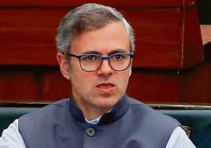

| Andhra Pradesh |
N. Chandrababu Naidu |
Telugu Desam Party |
|
| Arunachal Pradesh |
Pema Khandu |
Bharatiya Janata Party |
|
| Assam |
Himanta Biswa Sarma |
Bharatiya Janata Party |
|
| Bihar |
Nitish Kumar |
Janata Dal (United) |
 |
| Chhattisgarh |
Vishnu Deo Sai |
Bharatiya Janata Party |
|
| Delhi |
Rekha Gupta |
Bharatiya Janata Party |
|
| Goa |
Pramod Sawant |
Bharatiya Janata Party |
|
| Gujarat |
Bhupendrabhai Patel |
Bharatiya Janata Party |
 |
| Haryana |
Nayab Singh Saini |
Bharatiya Janata Party |
|
| Himachal Pradesh |
Sukhvinder Singh Sukhu |
Indian National Congress |
|
| Jammu and Kashmir |
Omar Abdullah |
Jammu and Kashmir National Conference |
 |
| Jharkhand |
Hemant Soren |
Jharkhand Mukti Morcha |
|
| Karnataka |
Siddaramaiah |
Indian National Congress |
|
| Kerala |
Pinarayi Vijayan |
Communist Party of India (Marxist) |
|
| Madhya Pradesh |
Mohan Yadav |
Bharatiya Janata Party |
|
| Maharashtra |
Eknath Shinde |
Bharatiya Janata Party |
|
| Manipur |
N. Biren Singh |
Bharatiya Janata Party |
|
| Meghalaya |
Conrad Sangma |
National People's Party |
|
| Mizoram |
Zoramthanga |
Mizo National Front |
|
| Nagaland |
Neiphiu Rio |
Nationalist Democratic Progressive Party |
|
| Odisha |
Naveen Patnaik |
Biju Janata Dal |
|
| Punjab |
Bhagwant Mann |
Aam Aadmi Party |
|
| Rajasthan |
Ashok Gehlot |
Indian National Congress |
|
| Sikkim |
Prem Singh Tamang |
Sikkim Krantikari Morcha |
|
| Tamil Nadu |
M. K. Stalin |
Dravida Munnetra Kazhagam |
|
| Telangana |
Revanth Reddy |
Indian National Congress |
|
| Tripura |
Manik Saha |
Bharatiya Janata Party |
|
| Uttar Pradesh |
Yogi Adityanath |
Bharatiya Janata Party |
|
| Uttarakhand |
Pushkar Singh Dhami |
Bharatiya Janata Party |
|
| West Bengal |
Mamata Banerjee |
All India Trinamool Congress |
|